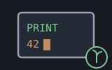

A reckoner seed: the console builtins — machines/seeds/seedterminal.shoddy

seedterminal bridges the console builtins into the reckoner,
Shoddy’s stack calculator (terminal
documents them). A seed is a short file that registers words with the
reckoner, and this one registers PRINT, and only
PRINT. The other three console builtins read:
Input and InputLine wait for a typed line, and
InKey wants raw keys. All of them belong to whatever shell owns
the session’s input. A dictionary word that read the console would
fight that shell for it. Writing has no such quarrel: every shell already
prints what a turn answers, and PRINT just prints a little
sooner.
The dictionary’s loops — TIMES, MAP,
FILTER, FOLD — run inside one line. The
stack’s own display arrives only when that line finishes.
PRINT writes the session’s output stream the moment
it runs, so a looping program can report each pass as it happens.
PRINT touches the world, and that is its whole point. What was
printed cannot be UNDOne, exactly as a written file cannot.
Strings print bare: "loop pass 3" PRINT says
loop pass 3, no quotes. That is because PRINT’s
job is a report line, not a stack picture. Everything else prints as the
stack would show it, at standard precision. The display format
(FIX and friends) lives in the session state, and a touch word
— one that changes the world outside the stack — is handed
cells, not the state.
Let st0 = RckSeedTerminal(RckNew())
RckEval(st0, "42 PRINT") ' prints 42, leaves the stack empty
RckEval(st0, "\"pass\" PRINT") ' prints pass — bare, no quotes
RckEval(st0, "1 { DUP PRINT 2 * } 5 TIMES") ' one line per doubling, as it runs| Word | Description |
|---|---|
| PRINT ( x -- ) | Print x on the session's output, immediately — strings bare, everything else as the stack shows it, at standard precision. |
| User | How | |
|---|---|---|
| halifax | The calculator's report line: PRINT, live from inside a loop. | |
| sparky | Sparky folds it too, and PRINT is why a turn's answer keeps what was printed apart from what the line said. |
A mill — a complete Shoddy program — claims this seed by
folding RckSeedTerminal over its reckoner state. That is all
halifax does.
| Machine | Why | |
|---|---|---|
| cuttle | The Cell type PRINT reads, and CutShow for its rendering. | |
| reckoner | RckReg and RckSeeding, the registration the word arrives through. |
The printing itself is the runtime’s Print builtin.
terminal is its documentation, and no machine is
included for it.